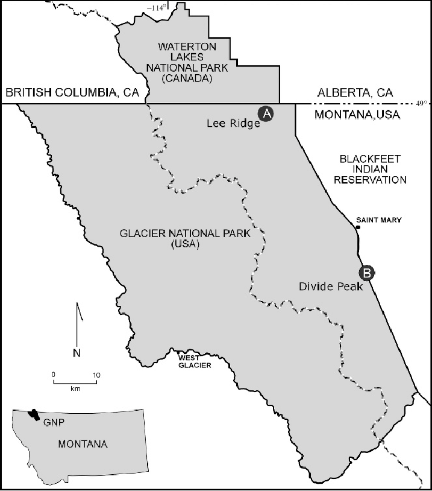

Plan Your Trip To Glacier
Step 1
When do you want to go to Glacier? You may already have a date/time in mind, but if not check out the information on different seasons.
May 1- June 30
- Campsites open up as early as June 15th
- Belly River and North Fork region may be available earlier
- Seasonal Bridges start to go up in late May
- Trails are often muddy or may have running water
- Snow conditions will change daily
July 1 - July 31
- Most campgrounds are open, though some connecting routes may be inaccessible
- All bridges installed by mid July
- July and August are the most popular months to visit
August 1 - August 31
- All areas of the park are generally open
- Snow and water hazards mostly gone, may return with storms
- Closings dependent on bear sightings and forest fires
- July and August are the most popular months to visit
September 1 - November 20
- More snow than August
- Bears are most active during this time
- Most bridges will be removed by late September
November 20 - April 30
- Winter season. Be prepared for sub-zero temperatures and constant snow and ice. Stay alert of avalanche warnings.
- More info on winter backpacking can be found here.
Image Source: Glacier.org
Step 2
Where in the park do you want to go? The park can be roughly divided into an east and west side by the Continental Divide. Trails on the east side of the park typically start at an elevation of about 5000 ft, and contain many open spaces, making them more popular than the western trails. Western trails typically start around 3200 ft and feature more forests and fewer people.
Image Source: Research Gate
You can find all the campsites and information about them here , and use an interactive map to help plan.
Step 3
Check out the park’s alerts page for any long term issues that might affect your trip.
Step 4
Some activities have special considerations. Check this list to see if your trip falls into any of these categories.
Nyack/Coal Creek Camping Zone:
Undesignated camping is available here, but advance permits are not allowed for undesignated camping.
River Camping:
Overnight river trips require a special permit, details here, and advanced permits are not allowed.
Entering Via Continental Divide Trail:
Hikers entering the park through this trail should call the backcountry office at (406) 888-7857 before starting their trip for information on obtaining a permit.
Blackfeet Reservation:
A special permit is required for any activities on the Blackfeet reservation. For more information call this number (406) 338-7207.
Step 5
Make sure you can get the recommended gear for hiking in Glacier. You should have:
- Bear Spray
- Topographic maps
- Compass
- First Aid Kit
- High-calorie food
- Shelter
- Sleeping bag and pad
- Appropriate footwear
- Wool or synthetic clothing to layer (dry clothes to sleep in)
- Rain jacket and pants
- Lightweight camp shoes
- Footwear for stream crossings
- A weatherproof food and garbage hanging bag
- 25 feet of rope for hanging food and garbage
- Water container and water filter
- Campstove and fuel
- Emergency signalling device
- Insect repellent
Step 6
Plan alternate routes. Only about one half to two thirds of visitors who apply for backpacking permits get their first choice for trips. You can submit up to 3 additional routes on your application, so plan some possible alternative routes.
Step 7
Head on over to the permit page to learn how to apply for an advance permit or a walk in permit at the park.